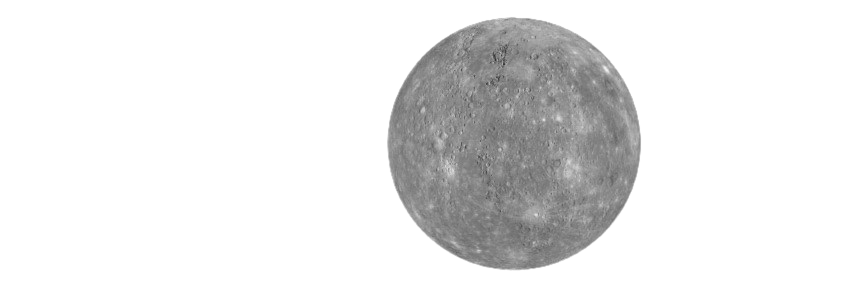
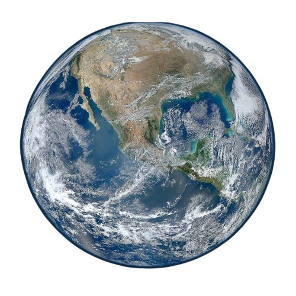
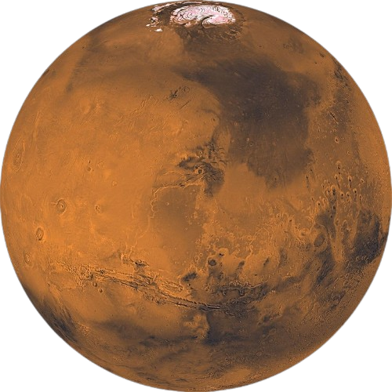
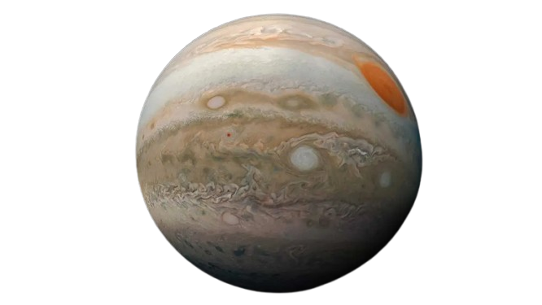
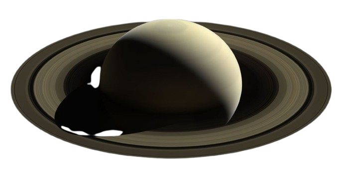
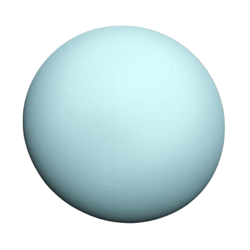
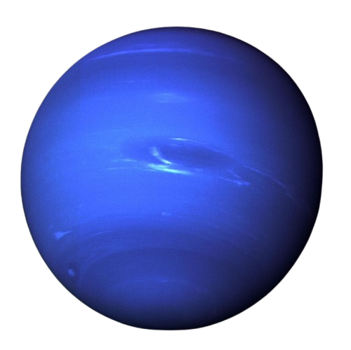

Mercure
Mercure est la planète la plus proche du Soleil. Elle est très chaude le jour et très froide la nuit.


La planète la plus proche du Soleil.

Très chaude à cause de son effet de serre.

La seule planète connue abritant la vie.

La planète rouge.

La plus grande planète du système solaire.

Célèbre pour ses anneaux.

Une planète glacée inclinée.

La planète la plus éloignée du Soleil.
Mercure est la planète la plus proche du Soleil. Elle est très chaude le jour et très froide la nuit.
Vénus est la planète la plus chaude à cause de son atmosphère très dense.

La Terre est la seule planète connue qui abrite la vie.

Mars est surnommée la planète rouge. Elle pourrait servir à une future colonisation humaine.

Jupiter est la plus grande planète du système solaire.

Saturne est célèbre pour ses magnifiques anneaux.

Uranus est une planète glacée qui tourne presque couchée sur elle-même.

Neptune est la planète la plus éloignée du Soleil.